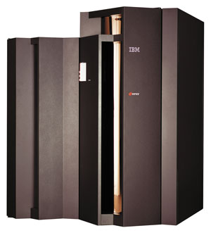

Олег Спиряев
Среди важнейших достижений XX века, изменивших способы сбора, передачи и использования информации, обычно называют компьютеры IBM System/360 и IBM PC. На самом деле корпорация IBM (http://www.ibm.com) сделала гораздо больше, сыграв весьма значительную роль в создании вычислительной техники и ее применении.
Во вторник, 7 апреля 1964 г., Томас Дж. Уотсон-младший, позднее возглавивший IBM, объявил о выпуске семейства ЭВМ System/360. Это был, пожалуй, самый дорогостоящий проект в истории вычислительной техники. Целью его была разработка всесторонне продуманного комплекса решений в области аппаратуры, ПО, технологии производства, организации распространения и технического обслуживания семейства компьютеров, различных по производительности и стоимости. Универсальность семейства достигалась за счет того, что компьютеры были рассчитаны на обработку как десятичных чисел, так и чисел с плавающей точкой, а также за счет развитого системного ПО, отвечающего специфическим потребностям различных пользователей. В разработке семейства System/360 участвовали Джин Амдал, Г. Блау, Ф. П. Брукс-младший. Машины этого типа получили общее имя "мэйнфрейм" (mainframe) - по названию типовых стоек IBM, в которых размещалось оборудование центрального процессора.
| Мэйнфрейм IBM System/360.
|
Двумя неделями ранее более двухсот менеджеров из компьютерной отрасли узнали о предстоящем событии из первого номера бюллетеня, ознаменовавшего начало работы компании International Data Corporation (IDC), основателем которой был Патрик Дж. Макговерн. Первое издание называлось EDP Industry and Market Report. Более позднее свое название - The Gray Sheet ("Серый лист") - бюллетень получил от цвета бумаги, на которой был напечатан. System/360 и первый отчет IDC дали начало новым сегментам ИТ-отрасли, стоимость которых на сегодняшний день измеряется миллиардами долларов.
Однако в 1964 г. хватало и скептиков. Так, журнал Fortune подсчитал, что риски IBM, связанные с выпуском System/360, составляли как минимум миллиард долларов, - иными словами, неудача проекта могла привести к банкротству "Голубого гиганта". Сомнения компьютерных инженеров были связаны и с ощущением начала эры их "суперважности" (ведь с тех пор программисты уже не могли непосредственно влиять на конфигурацию вычислительной платформы). К моменту появления System/360 в пользовании находилось примерно двадцать тысяч компьютеров. Всего одно из десятков предприятий могло купить машину такого типа - стоила она по тем временам довольно дорого. Рынок ПО вообще практически отсутствовал, а приложения писались под конкретные потребности клиента. Многие компании, занимавшиеся производством компьютеров, ушли с рынка, не дождавшись лучших времен. Среди них были такие гиганты электронной отрасли, как RCA, General Electric и Xerox (заметим, что до сих пор компьютерная отрасль требует от работающих на этом поприще просто стальных нервов). Кстати, на разработку мэйнфреймов IBM потратила 5 млрд долл. (что по нынешним ценам эквивалентно примерно 30 млрд долл.), и это было очень рискованным шагом, поскольку ежегодный доход компании тогда составлял всего 3,2 млрд долл. Но IBM поставила на эту лошадь и выиграла.
Пользователи вначале никак не отреагировали на первые мэйнфреймы серии 360, но месяца через два они поняли, чем хороши такие системы, и количество заказов превзошло все ожидания IBM. На протяжении же последующих пяти лет число компьютеров этого семейства, применяемых для решения корпоративных задач, возросло до 90 тыс.
От System/360 к S/390
Размеры компьютера System/360, по сегодняшним меркам, были весьма внушительны - он занимал целую комнату. Правда, конфигурация тогдашних мэйнфреймов сегодня, мягко говоря, не поражает воображения: тактовая частота процессора составляла 2 МГц, а емкость накопительной системы (ленты и диски) - всего 8 Мбайт. Но, несмотря на это, к такому компьютеру можно было одновременно подключить до 248 терминалов, с которых вводились данные и на которые выводились результаты.
При разработке этого проекта родились такие технологии, как параллельная обработка, конвейер, процессор ввода-вывода, виртуальная память, виртуальная машина, впоследствии перекочевавшие в "обычные" компьютеры.
Мэйнфреймы System/360 стали первым большим семейством компьютеров, позволявшим применять взаимозаменяемое ПО и периферийное оборудование. Вместо того чтобы приобретать новую систему, когда потребности и бюджет заметно вырастали, заказчики теперь могли просто наращивать вычислительные возможности по частям, добавляя или заменяя лишь необходимые аппаратные средства.
Различные устройства этой серии обладали полной совместимостью, что позволяло компоновать из них комплексы, как из деталей конструктора. Были созданы устройства ввода-вывода (в том числе с перфокарт), хранения данных (диски, ленточные накопители). Например, в рамках System/360 предлагался выбор из пяти процессоров, 44 периферийных устройств и 19 комбинаций питания, быстродействия и памяти. Пользователь мог эксплуатировать те же самые магнитные ленты и дисковые накопители с процессорами, отличавшимися по производительности в 100 раз. Стоил такой компьютер тогда около 2 млн долл.
Вообще говоря, в 1964 г. IBM объявила о создании шести моделей семейства System/360, ставших первыми компьютерами третьего поколения. Модели имели единую систему команд и отличались друг от друга объемом оперативной памяти и производительностью. Цифра 360 (полная окружность в градусах) указывала на возможность создать систему для приложений любого направления. При разработке моделей семейства использовался ряд новых принципов, что делало машины универсальными и позволяло с одинаковой эффективностью применять их как для решения задач из различных областей науки и техники, так и для обработки данных в сфере управления и бизнеса.
Действительно, мэйнфреймы могли решать самые разные задачи - от расчета зарплаты до расчета ракет. Подобные системы от IBM потом участвовали в американской лунной программе и в реальном масштабе времени обрабатывали данные во время экспедиций "Аполлонов". Кроме того, на базе System/360 была построена первая в мире полуавтоматическая система резервирования билетов SABRE.
| Системы IBM в работе.
|
В качестве элементной базы для семейства System/360 были выбраны гибридные микросхемы, благодаря чему новые модели стали считать машинами третьего поколения. В ранних своих компьютерах IBM использовала транзисторы, полученные по лицензии от корпорации Texas Instruments (http://www.ti.com). Но впоследствии руководство IBM приняло решение выпускать все электронные компоненты самостоятельно, чтобы не зависеть от внешних поставщиков и обеспечить максимально низкие цены на электронику. При разработке же System/360 руководство IBM решило не полагаться на интегральные схемы, изобретенные в 1959 г., так как в то время это была новая, еще не апробированная и дорогая технология. Вместо этого в IBM была разработана гибридная технология SLT (Solid Logic Technology).
Другой проблемой было производство памяти, основанной на магнитных сердечниках. Конечно, IBM обладала современными технологиями, но нужны были новые производственные мощности. Было расширено существующее подразделение в Кингстоне и построена новая фабрика в Боулдере (шт. Колорадо). Но и это полностью не решило проблему, и тогда был проведен эксперимент по переносу части производственных мощностей в Японию, где работники на фабрике изготовляли модули памяти вручную, без автоматического оборудования. Зарплаты японских рабочих, при самом высоком качестве работы, были тогда столь низки, что память, сделанная в Японии, оказывалась дешевле памяти, изготовленной в США при помощи автоматического оборудования.
Таким образом, на транзисторные машины второго поколения пришлось всего лишь пять лет в биографии IBM. При создании семейства System/360 IBM в последний раз позволила себе роскошь выпускать компьютеры, несовместимые с предыдущими моделями. Но самое главное, что эти компьютеры породили новое явление в компьютерной индустрии, создав так называемую платформу. Под этим обычно понимают индустриальный стандарт на аппаратное обеспечение с частично или полностью открытой архитектурой, что дает возможность сторонним фирмам производить периферийное оборудование и строить собственные системы на ее основе.
Кроме того, IBM разработала широкий набор эмуляторов и имитаторов предыдущих компьютеров, чтобы облегчить пользователям переход на компьютеры серии System/360. Заменив свои системы на семейство IBM System/360, пользователи могли в течение многих лет работать с компьютерами этой серии, переходя на все более мощные машины без затрат на переработку ПО. Концепция программно-совместимого семейства компьютеров стала стандартом для всей компьютерной промышленности. Широко известная теперь серия вывела компанию в неоспоримые лидеры в области вычислительной техники. Только в США было установлено более 20 тыс. мэйнфреймов System/360, что дало IBM возможность поставить под свой контроль две трети всего рынка компьютеров.
Спустя шесть лет, в 1971 г., IBM представила две первые модели семейства System/370 (370/135 и 370/195), преемников System/360 на новой технологической базе - монолитных интегральных схемах. Запуском в производство моделей семейства System/370 руководил Т. В. Лерсон, сменивший в 1974 г. Т. Дж. Уотсона-мл. на посту президента IBM. Появление новой серии не стало революцией, скорее это была эволюция ранних идей. Компьютеры линейки System/370 были уже полностью построены на интегральных схемах, что дало увеличение производительности по сравнению с линейкой System/360. Новые машины были более надежными, а благодаря использованию полупроводниковой памяти уменьшились в размерах.
Стоит отметить, что самые передовые решения, приводящие к повышению производительности, сразу же появлялись на этих машинах. Так, модель IBM 360/67 имела аппаратуру динамического преобразования адресов. B IBM 360/91 была реализована способность устройства управления обнаруживать все операции, допускающие одновременное исполнение. Многопроцессорность на основе общей оперативной памяти была также реализована в IBM 360/67. При этом межпроцессорную связь обеспечивала команда "сигнал процессору", предусматривающая передачу и прием кода приказа, декодирование кодов приказов и ответ процессору, пославшему сигнал. Для связи процессоров была добавлена дюжина новых команд. Предусмотрена была возможность прерывания одного процесса другим (например, в IBM System/360 модели 65 MP).
Выпущенная в 1971 г. System/370 модели 145 стала первым универсальным компьютером, в котором использовались большие интегральные схемы для построения оперативной памяти и логических функций. Новая технология, заменившая SLT, позволила интегрировать на одной микросхеме элементы, ранее размещавшиеся на нескольких. Благодаря этому машины System/370 стали в три-пять раз производительнее, чем System/360, построенные по SLT-технологии. Кроме того, в модели 145 память на магнитных сердечниках была заменена памятью на основе полупроводниковой технологии.
Мэйнфрейм System/370-45 стал одним из первых серийных компьютеров, использующих технологию "виртуальной памяти". Эта технология расширила возможности компьютеров за счет того, что пространство на жестком диске стало можно использовать для размещения дополнительной оперативной памяти, необходимой для работы ПО. Опережающий просмотр команд для динамического предсказания логических переходов был реализован в машине IBM 3081. Средством повышения производительности стали и присоединенные процессоры, подключавшиеся к центральным ЭВМ в качестве периферийных устройств. Были разработаны специальные устройства, предназначенные для решения очень узких классов задач, однако из-за небольших тиражей и высокой стоимости их применение было ограничено.
В 70-х годах получили широкое распространение матричные процессоры - устройства, реализовавшие концепцию "одна команда - много данных". Матричный процессор IBM-3838 состоял из управляющего процессора, оперативной памяти емкостью до 1 Мбайт, пяти процессорных элементов и устройства сопряжения с каналом, обеспечивающего скорость обмена с компьютером 3-4,5 Мбайт/с. Слово данных матричного процессора имело длину 32 бит. Одновременно матричный процессор мог обрабатывать до семи пользовательских задач. Все процессоры выполняли одновременно одну команду, каждый над своими данными. Производительность матричного процессора оценивалась как 30 MFLOPS или 100 MIPS.
С 1983 г. началась поставка моделей System/370 Extended Architecture. Накопленный компанией опыт позволил создать архитектуру ESA/370, а затем ESA/390. В 1990 г. были выпущены мэйнфреймы семейства 390, которые, как и все предыдущие модели этих семейств, поддерживали совместимость приложений снизу вверх. В 1995 г. появились серверы S/390 Parallel Enterprise Server.
Следующее поколение суперскалярной RISC-технологии, разработанное IBM к концу 80-х годов, - архитектура POWER (Performance Optimization with Enhanced RISC). В начале 1990 г. успешно дебютировала серия RISC System/6000. Тогда же для IBM RS/6000 была выпущена версия ОС Unix, названная AIX Version 3. В 1990 г. IBM продала 25 тыс. компьютеров RS/6000. Объем нового бизнеса IBM к концу того же года достиг 1 млрд долл.
Корпорация IBM учитывала приверженность пользователей к мэйнфреймам, связанную с хорошо обкатанными приложениями, развитыми возможностями защиты данных, резервного копирования и восстановления после сбоев. Однако мэйнфреймы на биполярных микросхемах, обеспечивая быстродействие 60 MIPS на один процессор, требовали водяного охлаждения, слишком много электроэнергии, специальных инженерных сооружений и больших площадей. Взамен IBM предложила мэйнфреймы на КМОП-процессорах, которые обходились потребителям на 70% дешевле.
Существенно, что IBM удваивала производительность КМОП-мэйнфреймов каждые полтора года. Всего за десять лет сменилось пять поколений машин на базе КМОП. Мэйнфреймы System/390 G5 в конфигурации с 10 процессорами способны выполнять до 900 млн инструкций в секунду. Технология IBM S/390 Parallel Sysplex позволяет еще больше увеличить производительность. Неотъемлемой частью архитектуры кластеризации IBM Parallel Sysplex стала технология объединения вычислительных систем, позволяющая нескольким компьютерам взаимодействовать с общим полем данных. При ее использовании коэффициент готовности системы достигает 99,999%.
Для балансировки распределения трафика между серверами, входящими в кластер Sysplex, корпорации IBM и Cisco Systems предлагают совместно разработанное ПО Generic Routing Encapsulation. Это один из результатов стратегического альянса двух корпораций.
На платформе S/390 работают прикладные системы класса ERP компаний SAP, People Soft, Oracle, Baan. Сама IBM предлагает набор программных и аппаратных средств IBM Treasure Series for S/390 для создания хранилищ данных, механизмов поиска и анализа информации приложений SAP R/3 в СУБД DB2.
После выпуска S/390 G5 корпорации IBM удалось захватить 95% мирового рынка мэйнфреймов. В 2000 г. появилось их шестое поколение - S/390 G 6.
Новое поколение - zSeries
Когда в октябре 2000 г. в IBM приступили к ребрэндингу своих серверных систем, эти преобразования были представлены как реакция на растущие требования бизнеса в Интернете. Руководство корпорации объявило о своем намерении использовать на всех платформах такие открытые стандарты и продукты, как TCP/IP, HTML, Java, XML, Apache, и о желании поддерживать быстро приобретающую популярность ОС Linux. Именно тогда мэйнфреймы получили название eServer zSeries, призванное подчеркнуть нулевое время простоя (zero down time) этих систем.
|  | Мэйнфрейм поколения zSeries.
|
Архитектура z/Architecture, на которой основаны системы zSeries, - это новый стандарт производительности и интеграции, ставший продолжением концепции сбалансированной системы в архитектуре S/390. Такие системы способны устранять узкие места, связанные с недостатком адресуемой памяти, предоставляя фактически неограниченные возможности 64-разрядной адресации и обеспечивая огромный запас для непредвиденных рабочих нагрузок и приложений растущего предприятия.
Новым флагманом мэйнфреймов стала серия компьютеров IBM eServer zSeries 900, оптимизированная для задач электронного бизнеса. В ее состав входят 64-разрядные многопроцессорные системы с оперативной памятью объемом 64 Гбайт и с пропускной способностью системы ввода-вывода и адаптеров сетевых каналов, составляющей 24 и 3 Гбайт/с соответственно. Производительность zSeries 900 превышает 2500 MIPS. Важнейший их компонент - 20-процессорный модуль MCM (Multi-Chip Module). Его 16 процессоров предназначены для исполнения прикладных задач в SMP-режиме, а остальные выполняют такие системные функции, как управление вводом-выводом, восстановление при возникновении ошибок, криптозащита.
Каждая система может работать автономно или в составе кластера Parallel Sysplex совместно с другими компьютерами zSeries и системами IBM S/390. Кластер обеспечивает высокую масштабируемость и исключительный уровень готовности. До 32 систем zSeries 900 можно объединять в кластеры на базе технологии Parallel Sysplex.
В 15 логических разделах zSeries 900 могут независимо друг от друга работать различные ОС (z/OS, z/VM и Linux for zSeries), обращаясь к общим системным ресурсам.
Выпуск новой и недорогой системы начального уровня IBM zSeries 800 (ранее известной под кодовым названием Raptor - "хищник") радикально изменил ценовые характеристики рынка мэйнфреймов. Новая система доступна в нескольких вариантах: восемь моделей общего назначения и единственный в своем роде мэйнфрейм под полным управлением Linux. Отличаются они прежде всего числом процессоров (от одного до четырех) и объемом оперативной памяти (от 8 до 32 Гбайт).
С выпуском zSeries 800 корпорация IBM смогла предложить высокую надежность и производительность технологии zSeries заказчикам, которым мэйнфреймы раньше были не по средствам. Кроме того, IBM впервые реализовала современную технологию кластеризации Parallel Sysplex на мэйнфреймах начального уровня. Напомним, что эта технология обеспечивает практически нулевое время простоя, высокую доступность приложений и надежность бизнеса за счет объединения нескольких мэйнфреймов в сетевой кластер.
Заказчики, использующие мэйнфреймы, все чаще добавляют новые Web-приложения в существующие инфраструктуры для экономии энергии, пространства и расходов на управление. Система zSeries 800 рассчитана на варианты объединения серверов для заказчиков со средним уровнем финансовых возможностей. Она позволяет отказаться от дорогостоящих и недозагруженных серверных пулов, составленных из Web-серверов, серверов файлов, печати и электронной почты, за счет переноса всей нагрузки на один мэйнфрейм, упрощая, таким образом, администрирование и снижая затраты. Благодаря технологии виртуальных машин IBM z/VM система zSeries 800 может объединить от 20 до нескольких сотен серверов Sun или Intel на одной физической платформе.
Благодаря современной технологии система zSeries 800 предоставляет экономичную и гибкую среду для разработки, тестирования и эксплуатации приложений, переноса приложений с 32- на 64-разрядную платформу и новых рабочих нагрузок электронного бизнеса. В zSeries 800 нашли применение технологии самовосстановления и самоуправления, реализованные в компьютерах IBM, включая резервные мощности, кластеры Parallel Sysplex, одновременный ввод-вывод и автоматическое обращение в IBM при обнаружении неисправности системы. Одновременно с новыми мэйнфреймами IBM анонсировала специальную версию 64-разрядной ОС z/OS.e, которая предназначается для исполнения приложений электронного бизнеса, в том числе сервера приложений WebSphere, баз данных DB2 и приложений MQSeries.
Самая мощная на сегодняшний день система масштаба предприятия - это модель eServer zSeries 990 (кодовое название T-Rex, "Тиранозавр"). Подобные системы предназначены для компаний финансового сектора и других отраслей, где требуется максимальная отказоустойчивость, защита информации и высокие вычислительные возможности. Стоимость нового IBM eServer zSeries 990 начинается с 1 млн долл. Новая система - результат четырех лет работы 1200 разработчиков IBM. Инвестиции в разработку "Тиранозавра", по словам представителей IBM, составили около 1 млрд долл. Но система стоит того.
Считается, что zSeries 990 - самый мощный и масштабируемый мэйнфрейм IBM за всю их 40-летнюю историю. Этот сервер обладает вдвое большими возможностями виртуализации и способностью делать примерно втрое больше работы, чем zSeries 900. В дополнение к новому дизайну, который позволяет заказчикам наращивать мощность без отключения системы, значительно упрощена структура продукта.
Производительность 32-процессорной системы zSeries 990 составляет 9000 MIPS, что втрое превышает показатели zSeries 900. Эта модель содержит в два раза больше процессоров, причем масштабировать сервер от одного до 32 процессоров допустимо без отключения системы.
На zSeries 990 поддерживается до 30 логических разделов (LPAR), что вдвое превышает возможности zSeries 900. С помощью версии z/VM 4.4 заказчики могут быстро создавать и эффективно управлять сотнями виртуальных Linux-серверов в одном физическом корпусе. Расширенные технологии виртуализации IBM делают zSeries 990 хорошей платформой для консолидации, когда необходимо сократить стоимость групп серверов и затраты на их управление.
Побивая собственный рекорд безопасности, новая 16-процессорная система zSeries 990 может обрабатывать11 000 транзакций в секунду, проводимых по протоколу Secure Sockets Layer (SSL); это на 57% выше по сравнению с 16-процессорной системой zSeries 900. Квитирование установления связи по протоколу SSL, то самое, что вызывает появление в нижней панели браузеров пиктограммы запертого замка, очень важно для транзакций электронного бизнеса и позволяет безопаснее обрабатывать заказы в оперативном режиме. Возможность обработки большего количества транзакций SSL означает, что компании смогут обслуживать больше заказчиков и за меньшее время обеспечивать больший объем продаж.
Для тех заказчиков, которым нужна высокая способность к подключению для новых задач электронного бизнеса, выполняемых на мэйнфрейме, система zSeries 990 предоставляет до 512 каналов ввода-вывода, что вдвое превышает возможности ее предшественницы. Кроме того, теперь доступно до 16 HiperSocket, которые обеспечивают высокоскоростное соединение по протоколу TCP/IP между виртуальными серверами в пределах одной системы zSeries 990 (это вчетверо превышает возможности zSeries 900). IBM также представила новую технологию под названием "логическая канальная подсистема", которая облегчит для заказчиков консолидацию нескольких мэйнфреймов в единую систему zSeries 990. В zSeries 990 по сравнению с zSeries 900 вчетверо увеличен объем памяти - 256 Гбайт против 64 Гбайт. Сердце zSeries 990 - многокристальный модуль MCM.
Подарок к юбилею
В сороковую годовщину появления мэйнфрейма System/360 корпорация IBM анонсировала систему eServer z890 с современной технологией для упрощения ИТ-среды. Эта система позволила предложить и новые ценовые условия для компаний среднего бизнеса. Кроме того, был объявлен сервер хранения IBM TotalStorage Enterprise Storage Server 750, обеспечивающий профессиональные корпоративные возможности более крупных систем хранения новому сегменту заказчиков. Вместе новый мэйнфрейм и системы хранения позволят компаниям среднего бизнеса консолидировать и упростить свою ИТ-среду с помощью самых современных отраслевых технологий.
Мэйнфрейм z890 создан на основе технологии z990 и предлагает высокий уровень гибкости, виртуализации, автоматизации и масштабируемости. Старшая модель линейки z890 почти в два раза превосходит по вычислительной мощности старшую модель линейки z800, что стало результатом практически 100%-ного увеличения производительности каждого центрального процессора общего назначения. Но, обеспечивая в целом значительное превосходство в вычислительной мощности по сравнению с z800, мэйнфрейм z890 благодаря высокой гибкости предлагается и в виде моделей начального уровня, вычислительная мощность которых более чем на 30% ниже, чем у серверов начального уровня z800. Кроме того, IBM предлагает z890 в качестве единой модели с 28 уровнями вычислительной мощности, что позволяет заказчикам более точно соизмерять размер сервера со своими бизнес-требованиями.
IBM продолжает развивать инновации, использующиеся в мэйнфреймах, добавляя новые возможности в системы z890 и z990. Так, чтобы обеспечить интеграцию Web-приложений на базе zSeries, была разработана новая технология zSeries Application Assist Processor (zAAP) - первая в отрасли среда выполнения Java, специально настроенная для работы с z/OS. Она предназначена для заказчиков, стремящихся интегрировать на одной серверной платформе Web-приложения на основе технологии Java с существующими базовыми бизнес-приложениями и данными. Технология zAAP позволяет увеличить общую системную производительность, упростить серверную инфраструктуру и повысить эффективность эксплуатации при одновременном снижении общих расходов на выполнение вычислений для Java-приложений, развернутых на платформе zSeries.
Расширенная с учетом поддержки zAAP, функция изменения вычислительной мощности по запросу, On/Off CoD (On/Off Capacity on Demand) обеспечивает дополнительные вычислительные ресурсы для кластерных систем Parallel Sysplex и рабочих нагрузок Java. Это позволяет с максимальной гибкостью реагировать на неожиданные изменения спроса.
Для упрощения инфраструктуры предназначен контроллер OSA Express Integrated Console Controller, благодаря которому устраняется потребность в определенном периферийном аппаратном обеспечении и поддерживается до 120 соединений для сеанса консоли.
Усовершенствования для z990 также включают поддержку до четырех логических подсистем каналов, до 1024 каналов ввода-вывода и улучшенную возможность соединения сетей, что помогает ИТ-специалистам упростить управление наиболее сложной инфраструктурой в многофункциональной среде.
Одновременно с новой системой IBM представила и новую версию ОС z/OS 1.6, выход которой запланирован на сентябрь 2004 г. Эта ОС содержит множество усовершенствований, предназначенных для интеграции рабочих нагрузок Java в среде z/OS, включая поддержку zAAP, улучшенное управление рабочими нагрузками для приложений Web-серверов и усовершенствованные средства обеспечения доступности IP-сетей. Кроме того, IBM планирует включить в z/OS 1.6 64-разрядную среду приложений для C/C++ и Java SDK, которая повысит масштабируемость и упростит портирование приложений.
Новая версия z/VM с усовершенствованными функциями виртуализации предназначена для хостинга Linux с улучшенной поддержкой сетей, функций безопасности и открытых устройств (SCSI). z/VSE V3R1 - это следующее поколение VSE для заказчиков zSeries, для которого планируется поддержка открытых устройств (SCSI). Операционная система z/VSE работает в 31-разрядном режиме.
Технология безопасности для мэйнфреймовВ начале года IBM представила новую технологию безопасности (часть релиза операционной системы мэйнфреймов z/OS 1.5) и впервые в индустрии реализовала централизованное управление многоуровневой системой безопасности. Вместе с IBM DB2 Universal Database for z/OS Version 8 решение IBM обеспечивает многоуровневую защиту мэйнфреймов zSeries, что облегчает выполнение требований законодательства и органов финансового контроля и открывает новые возможности электронного хостинга. Эта технология также улучшает совместное использование важной конфиденциальной информации правительственными и другими организациями. Технология многоуровневой защиты позволяет администраторам ИС предоставлять доступ к информации на основе потребностей пользователя или его полномочий. Она предотвращает неавторизованный доступ и разглашение секретной информации. IBM z/OS 1.5 и DB2 V8 позволяют управлять единым хранением данных на уровне строк и доступом к данным пользователей на основе персональных потребностей. Например, если пользователю присвоен самый высокий уровень допуска к секретной информации, то он получает больше прав на использование базы данных, чем обычный пользователь. Внедрение нового решения IBM избавляет организации от необходимости дублировать инфраструктуру для защиты секретных данных, что, в свою очередь, помогает сократить расходы на ИТ, размещение и администрирование. Кроме того, обеспечивается лучшая оперативность данных, их совместное использование, администрирование и управление, поскольку не требуется объединять информацию из разных источников. Как известно, централизованное управление многоуровневой защитой - основная задача для правительственных учреждений, которые хотят ликвидировать дублирование инфраструктуры и упростить организацию совместного использования информации разными ведомствами при повышенном уровне безопасности. ПО IBM z/OS и DB2 может помочь частным компаниям обеспечить безопасность и открывает новые возможности предоставления услуг безопасного хостинга. Многоуровневая безопасность z/OS может использовать такие преимущества IBM eServer zSeries, как мощная криптозащита, высокая доступность, масштабируемость и гибкость для обеспечения надежной защиты среды. |
Заключение
В 90-х годах прошлого века сложилось впечатление, что все задачи можно решить при помощи персональных компьютеров, объединенных в сеть. Чуть позже на замену мэйнфреймам предполагался Интернет. Однако, как показывают сегодняшние реалии, поколебать рыночные позиции этих монстров ИТ-отрасли так и не удалось. На самом деле ПК просто расширили область применения компьютеров и в бизнесе, и в быту, однако ряд задач по-прежнему невозможно решить иначе как на мэйнфрейме.
Мэйнфреймы используются в критически важных областях деятельности компаний, а сроки их службы исчисляются десятилетиями. Поэтому многие из этих машин успешно работают до сих пор. В новом веке интерес к мэйнфреймам вновь растет. Их высокая надежность и производительность остаются непреходящими ценностями. Мэйнфреймы отлично вписались в Интернет-эру; а, может быть, Интернет - лишь один из путей их эволюции. По мнению ряда экспертов, мэйнфреймы, например, практически неуязвимы для вирусов, что привлекает корпорации, желающие застраховаться от кибератак.
Мэйнфреймы пригодны для решения практически любых задач - от научных и инженерных до деловых, требующих больших вычислительных мощностей. Они имеют хорошо сбалансированную многопроцессорную архитектуру с возможностью загрузки нескольких независимых копий ОС. Масштабируемость архитектуры позволяет при увеличении количества процессоров и памяти получать контролируемый, расчетный прирост производительности. Большой объем оперативной памяти таких систем создает новые, ранее недоступные возможности во многих прикладных областях - от ведения больших резидентных баз данных до сложных научных вычислений, например, в таких областях, как исследование генома человека или морская нефтеразведка.